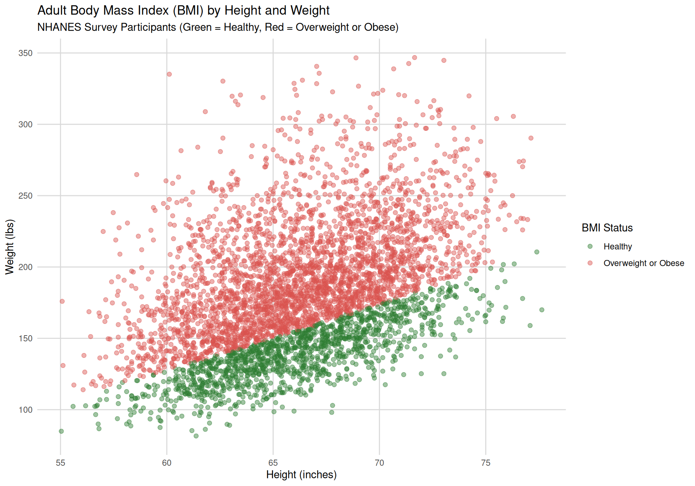

US Health & Nutrition Trends (1999–2023)
Diet and nutrition play a central role in determining long-term health outcomes. When diets are heavily reliant on ultra-processed foods—which are often high in added sugars, unhealthy fats, and sodium—they contribute to excess weight gain and substantially elevate the risk of chronic conditions such as type 2 diabetes and hypertension. Conversely, diets rich in whole, minimally processed foods provide essential nutrients and fiber that support a healthy weight and protect metabolic function. The visualizations below draw on data from the National Health and Nutrition Examination Survey (NHANES) to examine how changes in American dietary habits connect to trends in body mass index (BMI), adult obesity, and chronic disease over the last two decades.
This visualization maps adult survey participants from the NHANES dataset across height and weight. Points in green indicate a healthy weight (\(\text{BMI} < 25\)), while points in red indicate overweight or obesity (\(\text{BMI} \ge 25\)).
This visualization shows the trend in age-adjusted obesity prevalence (\(\text{BMI} \ge 30\)) among adults aged 20 and older in the United States from 1999 through 2023, based on data collected by the National Health and Nutrition Examination Survey (NHANES).
Between 1999–2000 and 2017–2018, adult obesity prevalence rose steadily from 30.5% to over 42%, before leveling off near 40% in the most recent 2021–2023 cycle.
This visualization tracks the age-adjusted prevalence of major chronic health conditions in the U.S. that are strongly influenced by diet, nutrition, and food quality, based on examination data from CDC NHANES.
About These Diseases and Their Links to Food
Food Consumption Trends (Ultra-Processed vs. Unprocessed)
This visualization tracks the proportion of daily caloric intake derived from ultra-processed foods (red) compared to unprocessed or minimally processed foods (green) across all survey cycles from 1999 through 2023 based on NHANES dietary recall data.
From 1999 to 2018, daily caloric intake from ultra-processed food (red) rose from 52.8% to 57.0%, while unprocessed food (green) dropped from 33.5% to 27.4%, followed by a post-pandemic shift toward whole foods in 2021–2023.